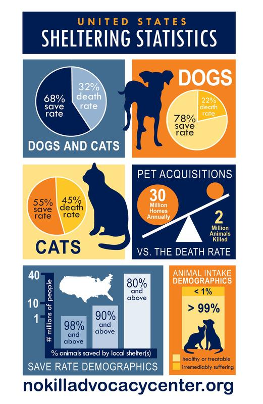

There are many scientific facts about every single animal.
But here is one intereste fact about dogs and cats. That you
might not know about that is really scientific
- A wet nose helps them be able to scent some chemicals
- About 6 million dogs are sick with cancer
